加载性能
前言
本人平时学习及收集内容，欢迎参入一起讨论。
内容
一、首屏加载
首屏加载是被讨论最多的话题,一方面 web 前端首屏的加载性能的确普遍较差,另一方面,首屏的加载速度至关重要,很多时候过长的白屏会导致用户还没有体验到网站功能的时候就流失了,首屏速度是用户留存的关键点。
“它在运行吗？” 这个疑问一直到用户看到页面第一个绘制的元素为止，这个时候用户才能确定自己的请求是有效的（而不是被墙了...）
“它有用吗？” 如果只绘制出无意义的各种乱序的元素，这对于用户是不可理解的，此时虽然页面开始加载了，但是对于用户没有任何价值，直到文字内容、交互按钮这些元素加载完毕，用户才能理解页面，这个时候用户会尝试与页面交互。
“它能使用了吗？” 直到用户成功与页面互动，这才算是首屏加载完毕了
二、白屏的定义
不管是我们如何优化性能，首屏必然是会出现白屏的，因为这是前端开发这项技术的特点决定的。
白屏时间是指：用户从打开页面开始到页面开始有东西呈现为止，这过程占用时间就是白屏时间
- 白屏时间 =
domloadng-fetchStart
三、白屏加载的问题分析
在现代前端应用开发中，我们往往会用 webpack 等打包器进行打包，很多情况下我们不进行优化，就会出现很多何种巨大的 chunk，有的甚至在 5M 左右，这些 chunk 是加载速度的杀手。
浏览器通常都有并发请求的限制，以 Chrome 为例，它的并发请求就为 6 个，这导致我们必须在请求完前 6 个之后，才继续进行后续请求，这也影响我们资源的加载速度。
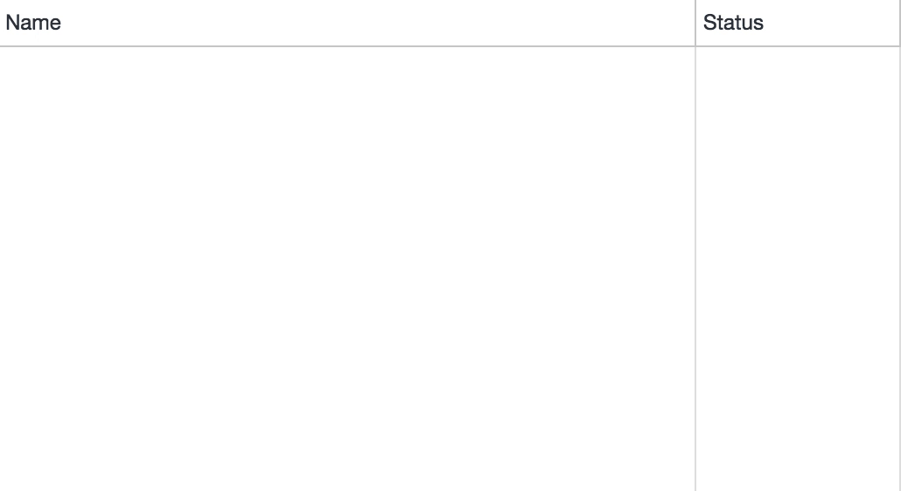
当然了，网络、带宽这是自始至终都影响加载速度的因素，白屏也不例外
四、白屏的性能优化
我们先梳理下白屏时间内发生了什么：
- 回车按下，浏览器解析网址，进行 DNS 查询，查询返回 IP，通过 IP 发出 HTTP(S)请求
- 服务器返回 HTML，浏览器开始解析 HTML，此时触发请求 js 和 css 资源
- js 被加载，开始执行 js，调用各种函数创建 DOM 并渲染到根节点，直到第一个可见元素产生
4.1 loading 提示
如果你用的是以 webpack 为基础的前端框架工程体系，那么你的index.html文件一定是这样的：
<div id="app"></div>
我们将打包好的整个代码都渲染到这个 root 根节点上，而我们如何渲染呢？当然是用 JavaScript 操作各种 dom 渲染,比如 react 肯定是调用各种_React_._createElement_(),这是很耗时的,在此期间虽然 html 被加载了,但是依然是白屏,这就存在操作空间,我们能不能在 js 执行期间先加入提示,增加用户体验呢?
是的,我们一般有一款 webpack 插件叫 html-webpack-plugin ,在其中配置 html 就可以在文件中插入 loading 图。
webpack 配置：
const HtmlWebpackPlugin = require('html-webpack-plugin')
const loading = require('./render-loading')
module.exports = {
entry: './src/index.js',
output: {
path: __dirname + '/dist',
filename: 'index_bundle.js'
},
plugins:[
new HtmlWebpackPlugin({
template: './src/index.html',
loading:loading
})
]
};
2
3
4
5
6
7
8
9
10
11
12
13
14
15
16
4.2 (伪)服务端渲染
那么既然在 HTML 加载到 js 执行期间会有时间等待，那么为什么不直接服务端渲染呢？直接返回的 HTML 就是带完整 DOM 结构的，省得还得调用 js 执行各种创建 dom 的工作，不仅如此还对 SEO 友好
正是有这种需求 vue 和 react 都支持服务端渲染，而相关的框架Nuxt.js、Next.js也大行其道，当然对已经采用客户端渲染的应用这个成本太高了。
4.3 开启 HTTP2
我们看到获取 html 之后我们需要自上而下解析，在解析到script相关标签的时候才能请求想关资源，而且由于浏览器并发限制，我们最多一次性请求 6 次，那么有没有办法破解这些困境呢？
http2 是非常好的解决办法，http2 本身的机制就跢快：
- http2 采用二进制分帧的方式进行通信，而 http1.x 是用文本，http2 的效率更高
- http2 可以进行多路利用，即跟同一个域名通信，仅需要一个 TCP 建立请求通道，请求与响应可以同时基于此通道进行双向通信，而 http1.x 每次请求需要建立 TCP，多次请求需要多次连接，还有并发限制，十分耗时
- http2 可以头部压缩，能够节省消息头战胜的网络的流量，而 HTTP/1.x 每次请求，都会携带大量冗余头信息，消费了很多带宽资源
4.4 开启浏览器缓存
参考web 缓存
4.5 webpack 打包优化
通常情况下我们的 WebApp 是有我们的自身代码和第三方库组成的，我们自身的代码是会常常变动的，而第三方库除非有较大的版本升级，不然是不会变的，所以第三方库和我们的代码需要分开打包，我们可以给第三方库设置一个较长的强缓存时间，这样就不会频繁请求第三方库的代码了。
那么如何提取第三方库呢？在 webpack4.x 中 SplitChuncksPlugin 插件取代了 CommonsChunkPlugin 插件来进行公共模块抽取，我们可以对 SplitChunksPlugin 进行配置进行拆包操作。
SplitChunksPlugins 配置示意如下：
optimization:{
splitChunks: {
chunks: "initial", // 代码块类型 必须三选一："initial" (初始化) | "all"(默认就是all) | "async" (动态加载)
minSize: 0, // 最小尺寸，默认0
maxAsyncRequests: 1, // 最大异步请求数，默认1
maxInitialRequests: 1, // 最大初始化请求数，默认1
name: ()=>{}, // 名称，此选项可以接收function
cacheGroups:{ // 缓存组会继承splitChuncks的配置，但是test、priorty和reuseExistingChunk只能用于配置缓存组。
priority: "0", // 缓存组优先级，即权重 false | object
vendor: { // key 为entry中定义的入口名称
chunks: "initial", // 必须三选一： "initial"(初始化s) | "all" | "async"(默认就是异步)
test: /react|lodash/, // 正则规则验证，如果符合就提取chunk
name: 'vendor', // 要缓存的，分隔出来chunk名称
minSize: 0,
minChunks: 1,
enforce: true,
reuseExistingChunk: true // 可设置是否征用已用chunk 不再创建新的chunk
}
}
}
}
2
3
4
5
6
7
8
9
10
11
12
13
14
15
16
17
18
19
20
21
split-chunks-plugin的配置项很多，可以去官网了解如何配置，我们现在只简单列举了一下配置元素。
如果我们想抽取第三方库可以这样简单配置
splitChunks:{
chunks: 'all',
minSize: 30000,
maxAsyncRequests: 5,
maxInitialRequests: 3, // 最大初始化请求数
automaticNameDelimiter: '~', // 打包分割符
name: true,
cacheGroups: {
vendor: {
name: "vendor",
test: /[\\/]node_modules[\\/]/, // 打包第三方库
chunks: "all",
priority: 10 // 优先级
},
common: { // 打包其余的公共代码
minChunks: 2, // 引入两次及以上被打包
name: 'common', // 分离包的名字
chunks: 'all',
priority: 5
}
}
}
2
3
4
5
6
7
8
9
10
11
12
13
14
15
16
17
18
19
20
21
22
这样似乎大功告成了？并没有，我们的配置有很大的问题：
- 我们粗暴得将第三方库一起打包可以吗？当然是有问题的，因为将第三方库一块打包，只要有一个库我们升级或者引入一个新库，这个 chunk 就会变动，那么这个 chunk 的变动性会很高，并不适合长期缓存，还有一点，我们要提高首页加载速度，第一要务是减少首页加载依赖的代码量，请问像 react vue reudx 这种整个应用的基础库我们是首页必须要依赖的之外，像 d3.js、three.js 这种特定页面才会出现的特殊库是没必要在首屏加载的，所以我们需要将应用基础库和特定的库进行分离。
- 当 chunk 在强缓存期，但服务器代码已经变动了，我们怎么通知客户端？上面我们的示意图已经看到了，当命中的资源在缓存期内，浏览器是直接读取缓存而不会向服务器确认的，如果这个时候服务器代码已经变动了，怎么办？这个时候我们不能将 index.html 缓存（反正 webpack 时代的 html 页面小到没有缓存的必要），需要每次引入 script 脚本的时候去服务器更新，并开启 hashchunk，它的作用是当 chunk 发生改变的时候会生成新的 hash 值，如果不变就不发生变动，这样当 index 加载后续 script 资源时如果 hashchunk 没变就会命中缓存，如果改变了那么会重新去服务端加载新资源。
下面示意了如何将第三方库进行拆包，基础型的 react 等库与工具性的 lodash 和特定库 Echarts 进行拆分
cacheGroups: {
reactBase:{
name: 'reactBase',
test: (module) => {
return /react|redux/.test(module.context);
},
chunks: 'initial',
priority:10,
},
utilBase:{
name: 'utilBase',
test: (module) =>{
return /rxjs| lodash/.test(module.context);
},
chunks: 'initial',
priority: 9,
},
uiBase:{
name: 'chartBase',
test: (module)=>{
return /echarts/.test(module.context);
},
chunks: 'initial',
priority: 8,
},
commons:{
name: 'common',
chunks: 'initial',
priority: 2,
minChunks:2
}
}
2
3
4
5
6
7
8
9
10
11
12
13
14
15
16
17
18
19
20
21
22
23
24
25
26
27
28
29
30
31
32
我们对 chunk 进行 hash 化，正如下图所示，我们变动 chunk2 相关的代码后，其它 chunk 都没有变化，只有 chunk2 的 hash 改变了
output:{
filename: mode === 'production' ? '[name].[chunkhash:8]':'[name].js',
chunkFilename: mode === 'production' ? '[id].[chunkhash:8].chunk.js':'[id].js',
path: getPath(config.outputPath)
}
2
3
4
5
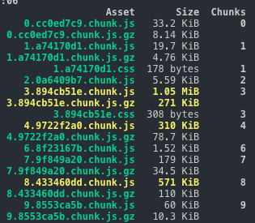
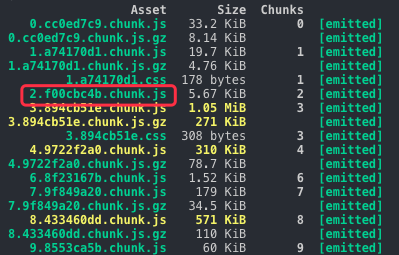
我们通过 http 缓存+webpack hash 缓存策略使得前端项目充分利用了缓存的优势，但是 webpack 之所以需要传说中的webpack 配置工程师是有原因的，因为 webpack 本身是玄学，还是以上图为例，如果你 chunk2 的相关代码去除了一个依赖或者引入了新的但是已经存在工程中依赖，会怎么样呢？
我们正常的的期望是，只有 chunk2 发生变化了，但是事实上是大量不相干的 chunk 的 hash 发生了变动，这就导致我们缓存策略失败了，下图是变更后的 hash，我们用红圈圈起来的都是 hash 变动的，而事实上我们只变动了 chunk2 相关的代码，为什么会这样呢？
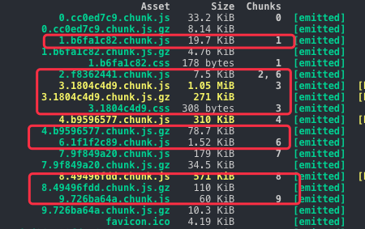
原因是 webpack 会给每个 chunk 搭上 id，这个 id 是自增的，比如 chunk 0 中的 id 为 0，一旦我们引入新的依赖，chunk 的自增被打乱，这个时候又因为 hashchunk 根据内容生成 hash，这就导致了 id 的变动致使 hashchunk 发生巨变，虽然代码内容根本没有变化。
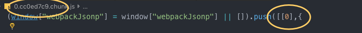
这个问题我们需要额外引入一个插件 HashedModuleIdsPlugin,他用非自增的方式进行 chunk id 的命名,可以解决这个问题,虽然 webpack 号称 0 配置了,但是这个常用功能没有内置,要等到下个版本了。
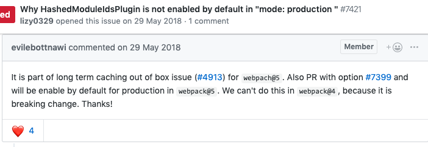
webpack hash 缓存相关内容建议阅读此文章 作为拓展
五、FMP(首次有意义绘制)
在白屏结束之后，页面开始渲染，但是此时的页面还是只是出现个别无意义的元素，比如下拉菜单按钮、或者乱序的元素、导航等等，这些元素虽然是页面的组成部分但是没有意义。
什么是有意义？
- 对于搜索引擎用户是完整搜索结果
- 对于微博用户是时间线上的微博内容
- 对于淘宝用户是商品页面的展示
那么在 FCP 与 FMP 之间虽然开始绘制页面，但是整个页面是没有意义的，用户依然在焦虑等待，而且这个时候可能出现乱序的元素或者闪烁的元素，很影响体验，此时我们可能需要进行用户体验上的一些优化。
Skeleton 是一个好方法，Skeleton 现在已经很开始被广泛应用了，它的意义在于事先撑开即将渲染的元素，避免闪屏，同时提示用户这要渲染东西了，较少用户焦虑。
比如微博的 Skeleton 就做的很不错
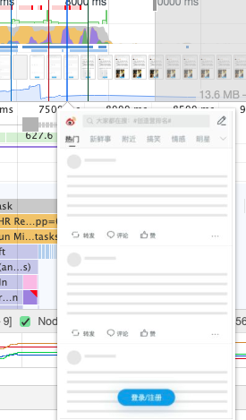
在不同框架上都有相应的 Skeleton 实现
- React: antd 内置的骨架图 Skeleton 方案
- Vue：vue-skeleton-webpack-plugin
以 vue-cli 3 为例,我们可以直接在 vue.config.js 中配置
// 引入插件
const SkeletonWebpackPlugin = require('vue-skeleton-webpack-plugin');
module.exports = {
// 额外配置参考官方文档
configureWebpack: (config) => {
config.plugins.push(new SkeletonWebpackPlugin({
webpackConfig:{
entry:{
app: path.join(__dirname,'./src/Skeleton.js')
}
},
minimize: true,
quiet: true
}))
},
// 这个是让骨架屏的css分离，直接作为内联style处理到html里，提高载入速度
css:{
extract :true,
sourceMap: false,
modules: false
}
}
2
3
4
5
6
7
8
9
10
11
12
13
14
15
16
17
18
19
20
21
22
23
然后就是基本的 vue 文件编写了
六、TTI(可交互时间)
当有意义的内容渲染出来之后，用户会尝试与页面交互，这个时候页面并不是加载完毕了，而是看起来页面加载完毕了，事实上这个时候 JavaScript 脚本依然在密集得执行。
我们看到在页面已经基本呈现的情况下，依然有大量的脚本在执行
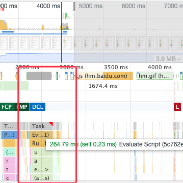
这个时候页面并不是可交互的，
6.1 Tree Shaking
Tree Shaking 虽然出现很早了，比如 js 基础库的事实标准打包工具 rollup 就是 Tree Shaking 的祖师爷，react 用 rollup 打包之后体积减少了 30%，这就是 Tree Shaking 的厉害之处。
Tree Shaking 的作用就是，通过程序流分析找出你代码中无用的代码并剔除，如果不用 Tree Shaking 那么很多代码虽然定义了但是永远都不会用到，也会进入用户的客户端执行，这无疑是性能的多杀手，Tree Shaking 依赖 es6 的 module 模块的静态特性，通过分析剔除无用代码
目前在 webpack4.x 版本之后在生产环境下已经默认支持 Tree Shaking 了，所以 Tree Shaking 可以称得上开箱即用的技术了，但是并不代表 Tree Shaking 真的会起作用，因为这里面还是有很多坑
坑 1：Babel 转译，我们已经提到了 Tree Shaking 的时候必须用 es6 的 module，如果用 common.js 那种 f
动态 module，Tree Shaking 就失效了，但是 Babel 默认状态下是启用 common.js 的，所以需要我们手动关闭。
坑 2：第三方库不可控，我们已经知道 Tree Shaking 的程序分析依赖 ESM，但是市面上很多库为了兼容性依然只暴露了 ES5 版本的代码，这导致 Tree Shaking 对很多第三方库是无效的，所以我们要尽量依赖有 ESM 的库，比如之前有一个 ESM 版的 lodash(lodash-es)，我们就可以这样引用了import { dobounce} from 'lodash-es'
6.2 polyfill 动态加载
polyfill 是为了浏览器兼容性而生，是否需要 polyfill 应该有客户端的浏览器自己决定，而不是开发者决定，但是我们在很长一段时间里都是开发者将各种 ployfill 打包，其实很多情况下导致用户加载了根本没有必要的代码。
解决这个问题的方法很简单，直接引入<script src="https://cdn.polyfill.io/v2/polyfill.min.js"></script>即可，而对于 Vue 开发者就更友好了，vue-cli 现在生成的模板就自带这个引用。
这个原理就是服务商通过识别不同浏览器的 User Agent，使得服务器能够识别客户使用的操作系统及版本、CPU 类型、浏览器及版本、浏览器渲染引擎、浏览器语言、浏览器插件等，然后根据这个信息判断是否需要加载 polyfill，开发者在流星器的 network 就可以查看 User Agent。
6.3 动态加载 ES6 代码
既然 polyfill 能动态加载，那么 es5 和 es6+的代码能不能动态加载呢？是的，但是这样有什么意义呢？es6 会更快吗？
我们得首先明确一点，一般情况下在新标准发布后，浏览器厂商会着重优化新标准的性能，而老的标准的性能优化会逐渐停滞，即使面向未来编程，es6 的性能也会往越来越快的方向发展。
其次，我们平时编写的代码可都 es6+，而发布的 es5 是经过 babel 或者 ts 默译的，在大多数情况下，经过工具转译的代码往往被比不上手写代码的性能，这个性能对比网站的显示也是如此，虽然 babel 等转译工具都在进步，但是仍然会看到转译后代码的性能下降，尤其是对 class 代码的转译，其性能下降是很明显的。
最后转译后的代码体积会出现代码膨胀的情况，转译器用了很多奇技淫巧将 es6 转为 es5 导致了代码量剧增，使用 es6 就代表了更小的体积。
那么如何动态加载呢？秘诀就是<script type="module">这个标签来判断浏览器是否支持 es6。
体积大小对比：
| Version | Size(minified) | Size(minified+gzipped) |
|---|---|---|
| ES2015+(main.js) | 80K | 21K |
| ES5(main-legacy.js) | 175K | 43K |
执行时间对比：
| Version | Parse/eval time(individual runs) | Parse/eval time(avg) |
|---|---|---|
| ES2015+(main.js) | 184ms,164ms,166ms | 172ms |
| ES5(main-legacy.js) | 389ms,351ms,360ms | 367ms |
双方对比的结果是,es6 的代码体积在小了一倍的同时,性能高出一倍.
6.4 路由级别拆解代码
我们在上文中已经通过 SplitChunksPlugin 将第三方库进行了抽离，但是在首屏加载过程中依然有很多冗余代码，比如我们的首页是个登录界面，那么其实用到的代码很简单
- 框架的基础库例如 vue redux 等等
- ui 框架的部分 form 组件和按钮组件等等
- 一个简单的布局组件
- 其它少量逻辑和样式
登录界面的代码很少的，为什么不只加载登录界面的代码呢？
这就需要我们进行对代码在路由级别的拆分，除了基础的框架和 UI 库之外，我们只需要加载当前页面的代码即可，这就有得用到 Code Splitting 技术进行代码分割，我们要做的其实很简单
我们得先给 babel 设置 plugin-syntax-dynamic-import 这个动态 import 的插件，然后就可以就函数内使用 import 了
对于 Vue 你可以这样引入路由
export default new Router({
routes:[
{
path:'/',
name:'Home',
component:Home
},
{
path:'/login',
name:'login',
component:()=>import('@components/login')
}
]
})
2
3
4
5
6
7
8
9
10
11
12
13
14
你的登录页面会被单独打包
对于 react，其内置的React.lazy()就可以动态加载路由和组件，效果与 vue 大同小异，当然lazy()目前还没有支持服务端渲染，如果你想在服务端渲染使用，可以用React Loadable
七、组件加载
路由其实是一个大组件，很多时候人们忽略了路由跳转之间的加载优化，更多的时候我们的精力都留在首屏加载之上，但是路由跳转间的加载同样重要，如果加载过慢同样影响用户体验。
我们不可忽视的是在很多时候，首屏的加载反而比路由跳转要快，也更容易优化。
比如石墨文档的首页是这样的:
一个非常常见的官网首页，代码量也不会太多，处理好第三方资源的加载后，是很容易就达到性能要求的页面类型。
加载过程不过几秒钟，而当我跳转到真正的工作界面时，这是个类似 word 的在线编辑器
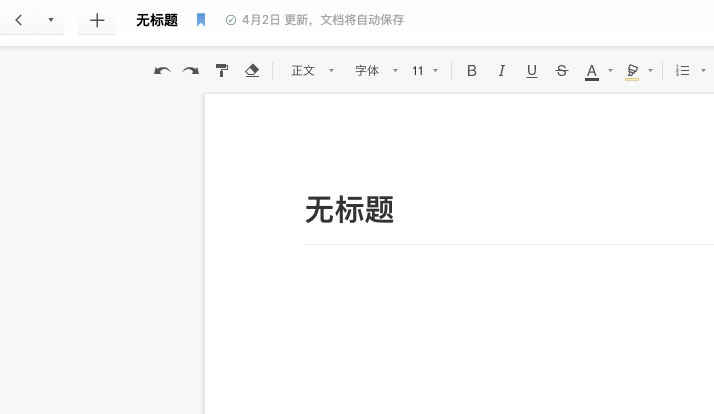
我用 Lighthouse 的测试结果是,可交互时间高达 17.2s
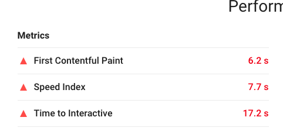
这并不是石墨做得不够好，而是对于这种应用网站，相比于首屏，工作页面的跳转加载优化难度更大，因为其工作页面的代码量远远大于一个官网的代码量和复杂度
我们看到在加载过程中有超过 6000ms 再进行 JavaScript 的解析和执行
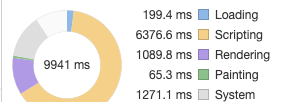
八、组件懒加载
Code Spliting 不仅可以进行路由分割，甚至可以进行组件级别的代码分割，当然是使用方式也是大同小异，组件的级别的分割带来的好处是我们可以在页面的加载中只渲染部分必须的组件，而其余的组件可以按需加载。
就比如一个 Dropdown(下拉组件)，我们在渲染初始页面的时候下拉的 Menu(菜单组件)是没必要渲染的，因为只有点击了 Dropdown 之后 Menu 才有必要渲染出来。
路由分割 vs 组件分割
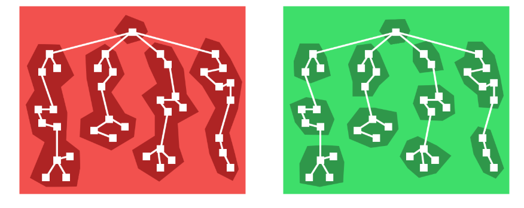
我们可以一个 demo 为例来分析一下组件级别分割的方法与技巧
我们假设一个场景，比如我们在做一个打卡应用，有一个需求是我们点击下拉菜单选择相关的习惯，查看近一周的打卡情况
我们的 demo 是这样子：
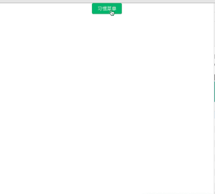
我们先对比一下有组件分割和无组件分割的资源加载情况（开发环境下无压缩）
无组件分割，我们看到有一个非常大的 chunk，因为这个组件除了我们的代码外，还包含了 antrd 组件和 Echarts 图表以及 React 框架部分代码
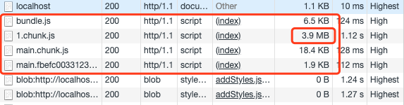
组件分割后，初始页面体积下降明显，路由间跳转的初始加载体积变小意味着更快的加载速度
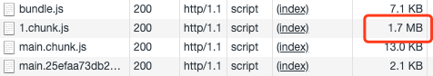
其实组件分割的方法跟路由分割差不多，也是通过 lazy+Suspense 的方法进行组件懒加载
// 动态加载图表组件
const Chart = lazy(()=>import('./charts'))
// 包含着图表的 model 组件
const ModalEchart = (props) =>(
<Modal
title = "Basic Modal"
visible = {props.visible}
onOk = {props.handleOk}
onCancel = {props.handleCancel}
>
<Chart />
</Modal>
)
2
3
4
5
6
7
8
9
10
11
12
13
14
九、组件预加载
我们通过组件懒加载将页面的初始渲染的资源体积降低了下来，提高了加载性能，但是组件的性能又出现了问题，还是上一个 demo，我们把初始页面的 3.9m 的体积减少到了 1.7m，页面的加载是迅速了，但是组件的加载却变慢了。
原因是其余的 2m 资源的压力全部压在图表组件上(Echarts 的体积缘故)，因此当我们点击菜单加载图表的时候会出现 1-2s 的 loading 延迟，如下：

我们能不能提前把图表加载进来，避免图表渲染中加载时间过长的问题？这种提前加载的方法就是组件的预加载
原理也很简单，就是在用户的鼠标还处于 hover 状态的时候就开始触发图表资源的加载，通常情况下当用户点击结束之后，加载也基本完成，这个时候图表会很顺利地渲染出来，不会出现延迟
keep-alive
对于使用 vue 的开发者 keep-alive 这个 API 应该是最熟悉不过了，keep-alive 的作用是在页面已经跳转后依然不销毁组件，保存组件对应的实例在内存中，当此页面再次需要渲染的时候就可以利用已经缓存的组件实例了。
如果大量实例不销毁保存在内存中,那么这个 API 存在内存泄漏的风险,所以要注意调用 deactivated 销毁。
参考资料
- 前端阶段性总结（二）：页面渲染机制与性能优化
- 前端性能优化之白屏时间
- 2018 前端性能优化清单
- 【译】2018 前端性能优化清单 —— 第一部分
- [译] 2019 前端性能优化年度总结 — 第一部分
- 2020 前端性能优化清单（一）
- 2020 前端性能优化清单（二）
- 2020 前端性能优化清单（三）
- 2020 前端性能优化清单（四）
- 2020 前端性能优化清单（五）
- 2020 前端性能优化清单（六）
- 前端性能优化-加载篇
- 我们是如何将网站加载时间减少 24%的？
- 网站性能优化实战——从 12.67s 到 1.06s 的故事
- 你必须懂的前端性能优化
- 我是如何让公司后台管理系统焕然一新的(上) -性能优化
- 我是如何让公司后台管理系统焕然一新的（下）-封装组件
- 提升 90%加载速度——vuecli 下的首屏性能优化
- 【第 843 期】前端性能优化
- 25 | 页面性能：如何系统地优化页面？
联系作者
平凡世界，贵在坚持。